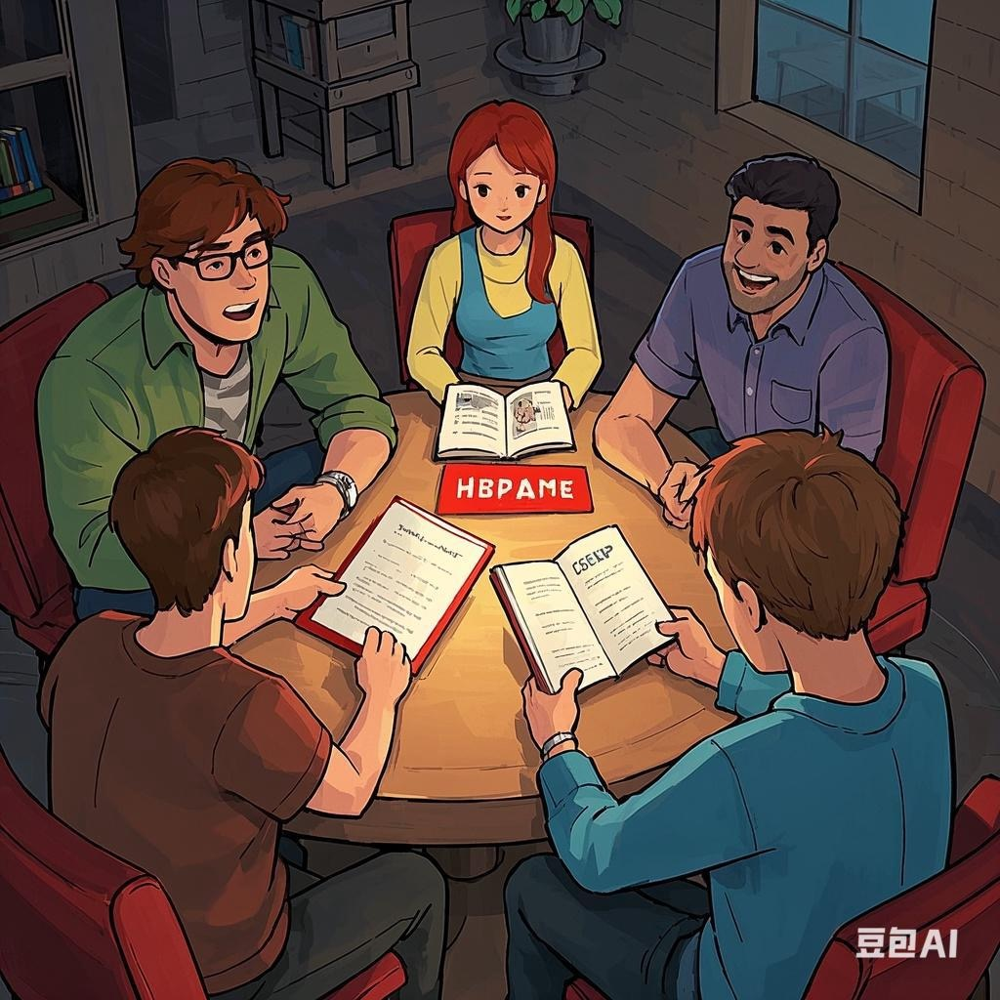
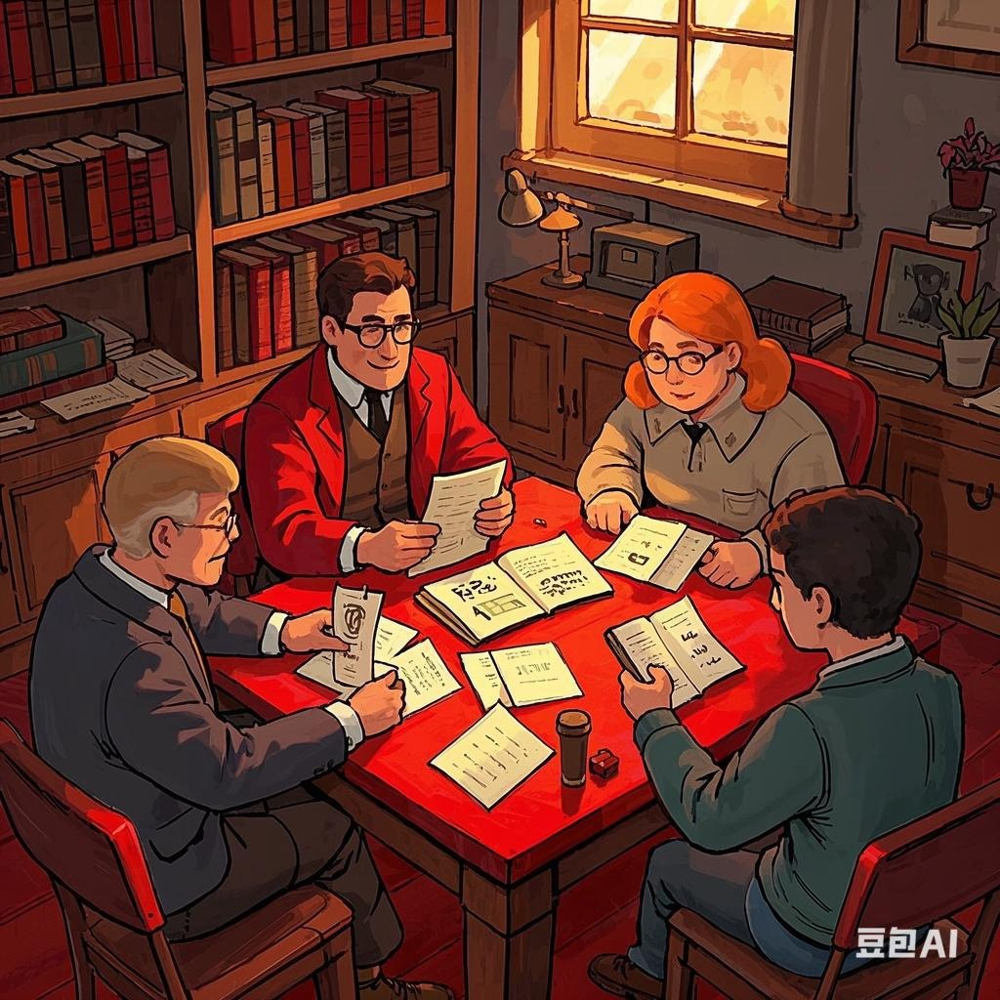

红色文化
-

兵临城下
以抗日战争和解放战争为背景，首部作品改编自1937年山西朔县的真实抗日历史。玩家需在生死抉择中体验家国大义，如是否坚守阵地或投降的艰难选择。 情感沉浸为主，通过写遗书等环节强化代入感。首作销量近5000册，成为红色情感本标杆。适合党建、团建活动，尤其适合新手和情感向玩家。
-

接班人
全国首款红色剧本杀，讲述1943年抗日战争时期一群孩子在小城苍岚县的斗争故事，角色包括有志青年、进步学者等，展现战争中的成长与牺牲。 新手友好，强调历史教育与沉浸体验，盒装附赠红领巾作为彩蛋。曾在全国30个城市大规模推广，迷圈APP上广受好评。适合青少年教育、学校思政课程。
-

寻找
上海黄浦区红色经典步道主题剧本杀，以1921年前后仁人志士探寻救国道路为背景，玩家可扮演青年学生、觉悟工人等角色。 融入城市历史遗迹（如一大会址），通过实景探索增强代入感，由“新青年”讲师团创作，兼具文旅推广功能。适合红色旅游、青少年研学活动。
-

刀鞘
经典谍战阵营本，背景设定于国共内战时期，玩家需通过身份推理、密码破译完成任务，阵营对抗性强。 高互动性和策略性，适合有经验的玩家。常被推荐给年轻群体用于党建活动，长期占据谍战本热度榜
-

孤城
由西宁市城西区主办的红色剧本杀，以革命历史事件为蓝本，通过专业演员演绎重现历史场景，强调红色文化传承。 政府主导的公益性活动，结合图书馆等公共文化场所，注重历史真实性
-

与妻书
以抗日战争为背景，改编自林觉民的绝笔信《与妻书》，讲述战火纷飞年代中个人命运与家国大义的冲突。玩家通过角色扮演体验革命者的抉择，如遗书中所述：“遍地腥云，满街狼犬……钟情如我辈，只能奋勇舍身，挽救于万一”